Supplementary Material
Sample-Level Speech and Noise Prediction
Unified evaluation and hop-periodic artifact mitigation
This supplement accompanies the paper “Sample-Level Speech and Noise Prediction: Unified Evaluation and Hop-Periodic Artifact Mitigation.” It explains HA-MAI and provides target, prediction, and error examples from the six test corpora. Speech and noise predictors are trained separately under a common causal protocol; prediction length F is specified in samples.
S1. Definition and estimation
Fixed-hop blockwise prediction repeatedly associates each output position with the same sampling-grid phase. The paper models the error as e[n] ≈ arx[n] + br + η[n], where r = n mod H, ar and br are periodic gain and bias errors, and η is non-periodic error. The Hop-Adaptive Mirror Artifact Index (HA-MAI) measures the gain-related component captured by target-modulated periodic templates.
Periodic gain modulation shifts copies of the target spectrum by multiples of Fs/H. Its first harmonic can produce reflections about Fs/(2H), giving 4, 2, 1, and 0.5 kHz at 16 kHz for H = 2, 4, 8, and 16. For the H = 4 examples below, mirror patterns may appear about 2, 4, and 6 kHz. These target-synchronous artifacts differ from ordinary DFT conjugate symmetry and unrelated high-frequency errors. Modulation of a nonzero DC component can also produce the whistle-like tonal artifacts described in the paper.
Error-normalized score. Let x[n] be the target and [n] its time-aligned prediction. For a record of N samples, n runs from 0 to N − 1. Define e[n] = x[n] − [n]. The score compares fitted mirror energy with total error energy:
Here Emirror is the energy of the fitted mirror component, Eerror is total prediction-error energy, and ε > 0 stabilizes the ratio. These energies are abbreviated as Em and Ee below. Thus (S1) asks how large the fitted mirror component is relative to the total error. The factor 10 converts an energy ratio to decibels. Equations (S2)–(S5) specify how to estimate its numerator.
Periodic modulation basis. Model the mirror component as x[n]g[n], where g has nominal period H samples and zero mean over one period. Expand g in real Fourier basis functions, with m indexing the harmonics:
Use both sine and cosine for m = 1, …, ⌊(H − 1)/2⌋ so the fit can capture any modulation phase. For even H, also include cos(πn); its sine counterpart vanishes at integer samples. Exclude the constant (DC) basis: multiplying it by the target would model a uniform gain mismatch, rather than variation across hop positions.
This gives K = H − 1 basis functions spanning all zero-mean H-periodic patterns. For H = 2, the sole basis is cos(πn); for H = 4, use cos(πn/2), sin(πn/2), and cos(πn). “Adaptive” means choosing the complete basis for the specified H; the detector does not estimate H automatically.
Target-synchronous templates. A sine or cosine alone describes a pure tone. To detect periodic copies of the current target’s spectral structure, multiply each basis function by that target:
Each template is the target multiplied by one cosine or sine basis. Stack all K templates as columns of T, an N × K real matrix. The coefficient vector c gives one fitted weight per template.
Joint ridge fit. Choose the template weights to match the observed error by least squares, with a small ridge penalty on the coefficients. Multiplication by the target generally makes the templates nonorthogonal, so their weights must be fitted together. Compute the following quantities in order:
G contains the template inner products; rhs contains the template–error inner products. The trace is the sum of the diagonal entries, so scale is the average template energy. The superscript ⊤ denotes transpose, and I is the K × K identity matrix. Use λ = 10−6 and ε = 10−12; α is the resulting energy-scaled ridge strength.
The notation solve(A, b) means finding z such that Az = b, without explicitly computing a matrix inverse. The added ridge term stabilizes the fit when templates are nearly dependent.
Reconstruction and energy. Reconstruct the mirror waveform, denoted , by multiplying the template matrix by its fitted coefficient vector. Compute mirror and error energies using squared L2 norms:
Here denotes the L2 (Euclidean) norm. Use the energy of the reconstructed waveform itself as Em. The fitting objective and the reduction in residual error are different quantities when ridge is used. Substitute Em and Ee into (S1) to obtain the record’s score. Fit each record independently; reversing the error sign reverses the fitted waveform but leaves the energies and score unchanged.
S2. Interpretation and limitations
For an individual record, when stabilization is negligible, −10, −20, and −30 dB indicate mirror shares of approximately 10%, 1%, and 0.1%. Nonnegative ridge ensures 0 ≤ Em ≤ Ee, giving the fixed-error-energy bounds
The paper computes HA-MAI for each evaluation unit, averages its dB values within each corpus, then weights the three corpora in each domain equally. A mean dB score corresponds to the geometric mean of the stabilized energy ratios, not an arithmetic mean of mirror percentages. The score in this supplement is the paper’s error-normalized HA-MAI.
Exact zero error yields 0 dB through ε/ε and must be labeled no error, rather than interpreted as a high mirror share. Near-zero error is dominated by stabilization; a silent target makes the detector uninformative.
A lower index does not imply more accurate prediction: unrelated error can lower the ratio by increasing its denominator. The paper reports HA-MAI together with NMSE and SDR: lower NMSE and higher SDR indicate better waveform prediction. Keep H fixed across compared methods, including randomized-interval counterparts; changing the fitted dimension changes the chance-correlation baseline.
In the paper, PE-PostNet improves waveform accuracy, while the complete system adds MS-PostNet and Adjacent RandomInterval across all three stages. Lower HA-MAI describes a reduced fitted share of total error; it alone does not prove a reduction in absolute mirror energy or isolate periodic bias errors. The complete system uses the shorter commitment interval as the detector period, matching its fixed-hop counterpart.
S3. Boundary validation and model examples
Thirty real clean targets were used: ten each from LibriSpeech, TIMIT, and AISHELL-1. The periodic construction = x + 0.2xg uses zero-mean H-periodic g with unit RMS over one period. The second construction replaces the entire prediction with independent, target-RMS-matched Gaussian noise; five fixed seeds give 150 evaluations per period.
Table S1. Mean per-unit HA-MAI (dB). Pure periodic errors are slightly below zero due to ridge shrinkage. Unrounded values are available in the summary CSV.
| Period H | Periodic mirror error | Gaussian prediction |
|---|---|---|
| 2 | ≈ 0 | −56.81 |
| 4 | ≈ 0 | −46.60 |
| 8 | ≈ 0 | −37.92 |
| 16 | ≈ 0 | −32.74 |
For each condition and period, Table S1 averages the independently computed per-unit dB scores with equal weights. Each target is one periodic-error record; each target × seed is one Gaussian record (30 and 150 records per period, respectively). All 720 records have non-silent targets and error energy above 100ε. The periodic error is almost completely recovered. Gaussian predictions score low despite poor waveform fidelity, confirming that the index measures a specific error structure. Their fitted energy reflects finite-sample target/template and noise correlations; these results do not establish a universal noise floor.
Real model examples (H = 4)
Figures S1–S6 provide one selected example from each of the six test corpora. Standalone S4-TD is trained independently; it is not the internal base output of the complete system. The complete system combines S4-TD, PE-PostNet, MS-PostNet, and Adjacent RandomInterval. These qualitative examples are not corpus averages.
For these configurations, standalone S4-TD uses B = F = H = 4. The complete system uses B = F = 5 and commitment intervals Hk ∈ {4, 5}, with short-interval prior q = 0.9. The detector uses H = 4 for both. We trim one initial sample from the standalone target and predicted signal, then compare identical targets over a common interval. This compares the combined systems, not a matched-F ablation of MS-PostNet.
Speech · LibriSpeech test-clean
(a) Target and predicted signals
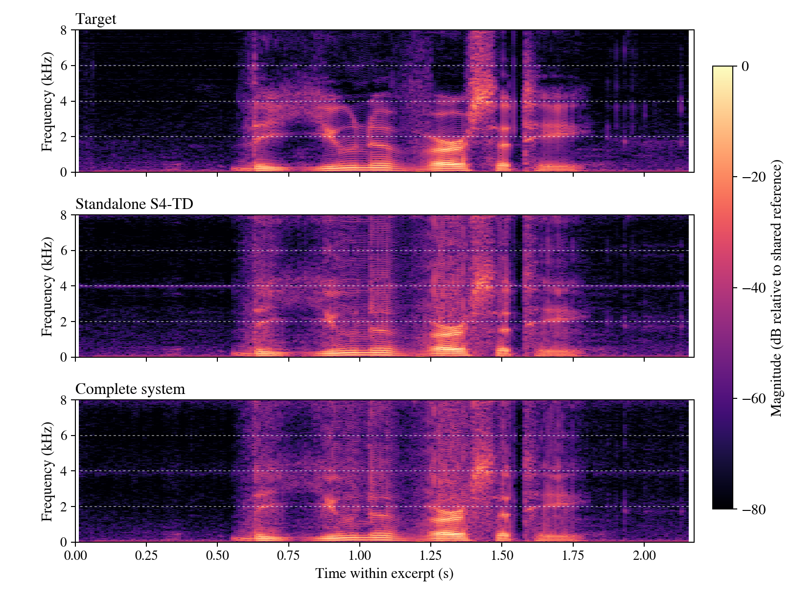
Target
Reference
Standalone S4-TD
B = F = 4
HA-MAI: −17.11 dB
NMSE: −12.73 dB
Complete system
B = F = 5; Hₖ ∈ {4, 5}
HA-MAI: −28.60 dB
NMSE: −12.99 dB
(b) Prediction errors: target − predicted signal
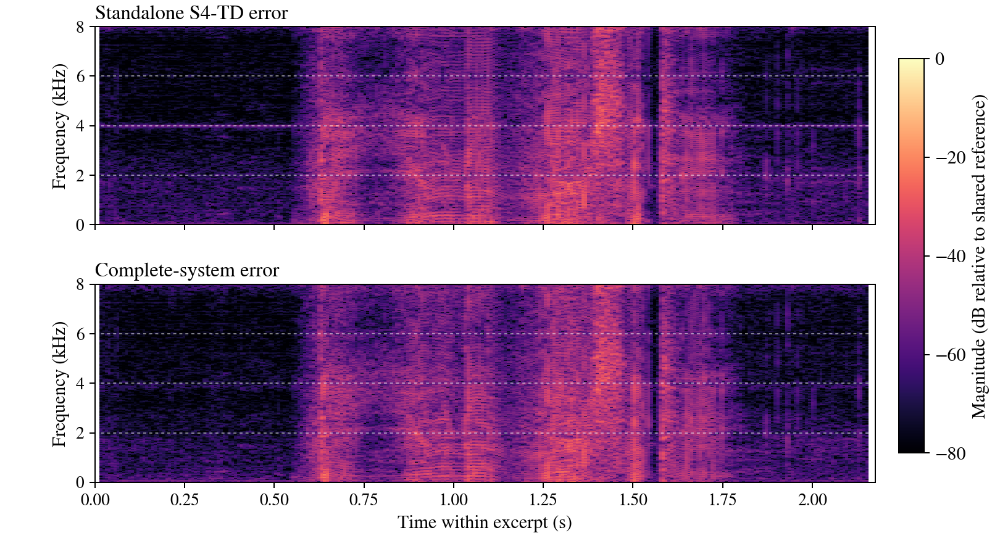
Standalone S4-TD error
Target − standalone predicted signal
Complete-system error
Target − complete-system predicted signal
Speech · TIMIT TEST
(a) Target and predicted signals
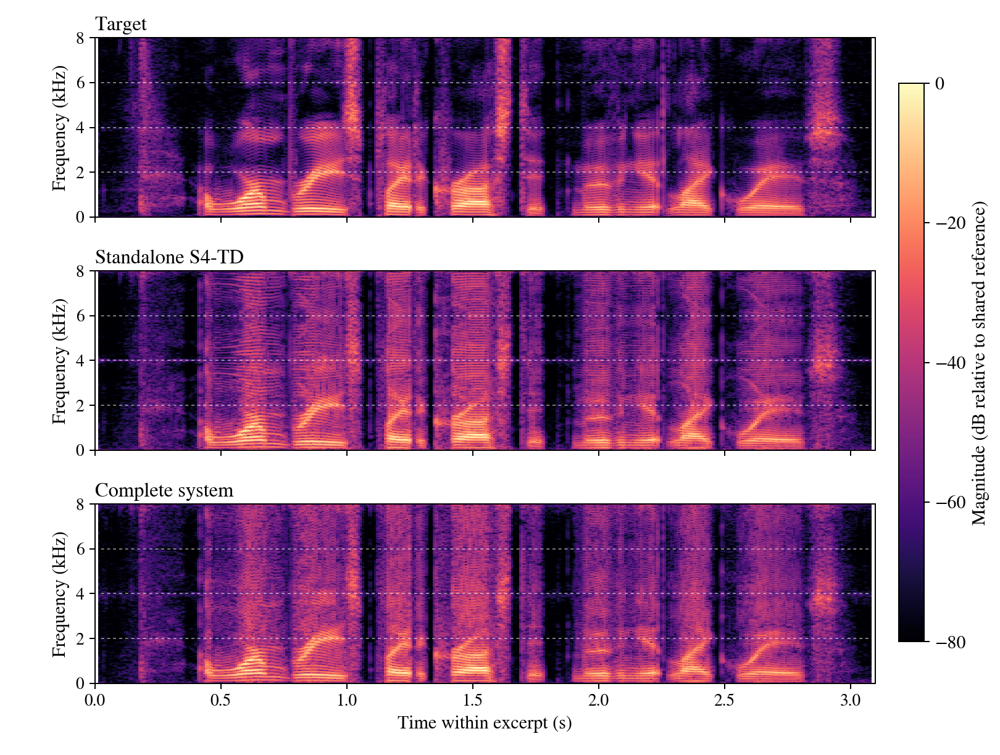
Target
Reference
Standalone S4-TD
B = F = 4
HA-MAI: −13.56 dB
NMSE: −10.73 dB
Complete system
B = F = 5; Hₖ ∈ {4, 5}
HA-MAI: −34.21 dB
NMSE: −10.97 dB
(b) Prediction errors: target − predicted signal
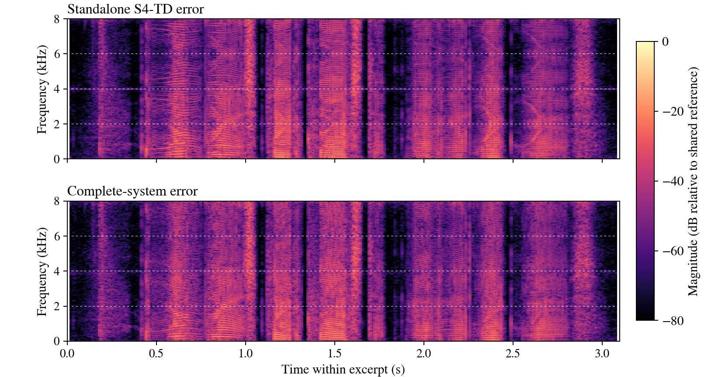
Standalone S4-TD error
Target − standalone predicted signal
Complete-system error
Target − complete-system predicted signal
Speech · AISHELL-1 test
(a) Target and predicted signals
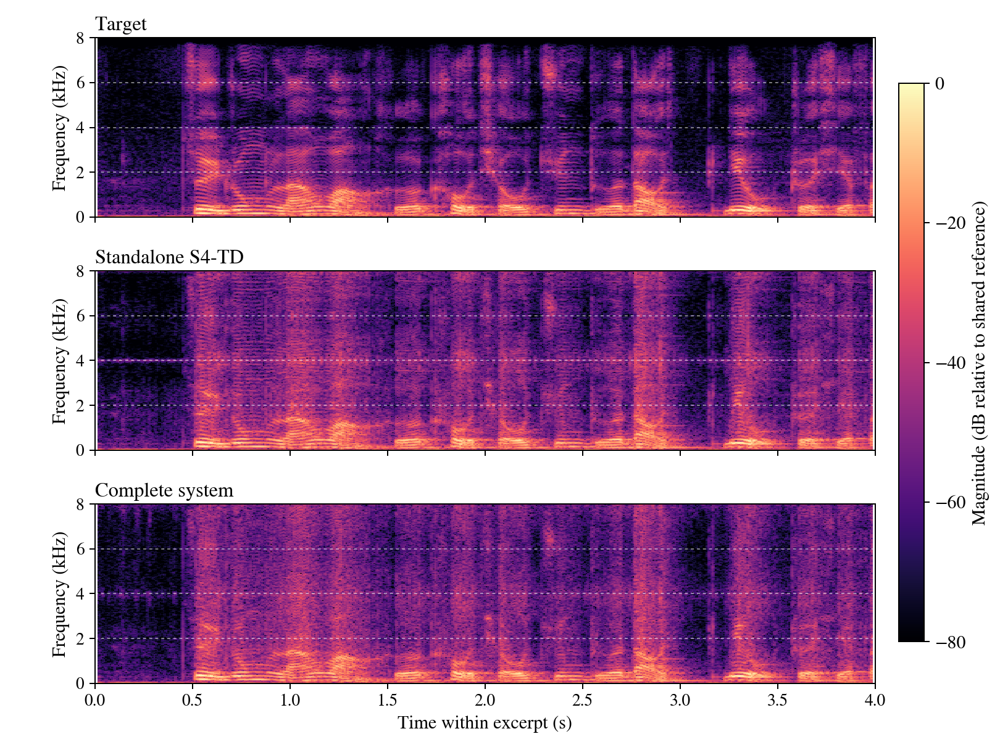
Target
Reference
Standalone S4-TD
B = F = 4
HA-MAI: −16.81 dB
NMSE: −11.19 dB
Complete system
B = F = 5; Hₖ ∈ {4, 5}
HA-MAI: −40.49 dB
NMSE: −12.10 dB
(b) Prediction errors: target − predicted signal
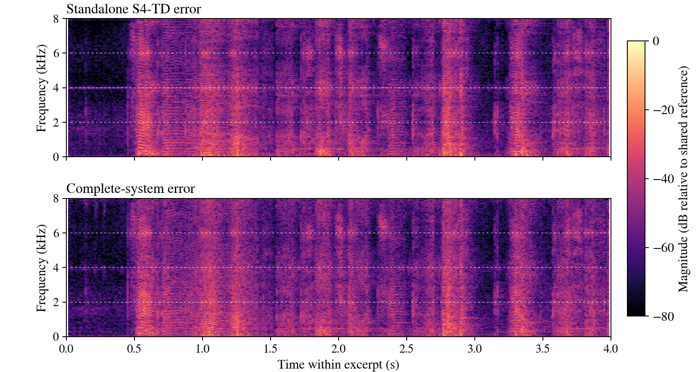
Standalone S4-TD error
Target − standalone predicted signal
Complete-system error
Target − complete-system predicted signal
Noise · NoiseX-92
(a) Target and predicted signals
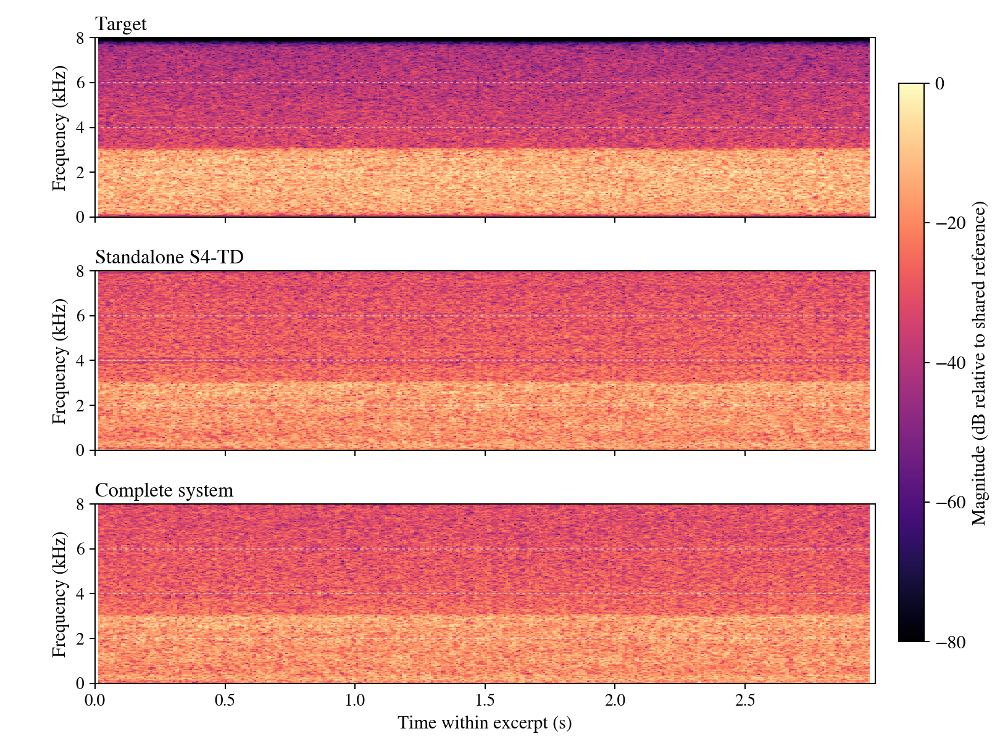
Target
Reference
Standalone S4-TD
B = F = 4
HA-MAI: −8.53 dB
NMSE: −3.53 dB
Complete system
B = F = 5; Hₖ ∈ {4, 5}
HA-MAI: −37.07 dB
NMSE: −3.61 dB
(b) Prediction errors: target − predicted signal
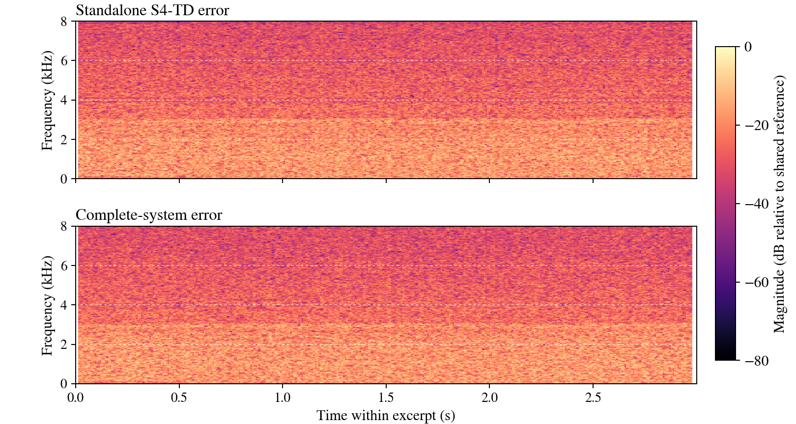
Standalone S4-TD error
Target − standalone predicted signal
Complete-system error
Target − complete-system predicted signal
Noise · DEMAND
(a) Target and predicted signals
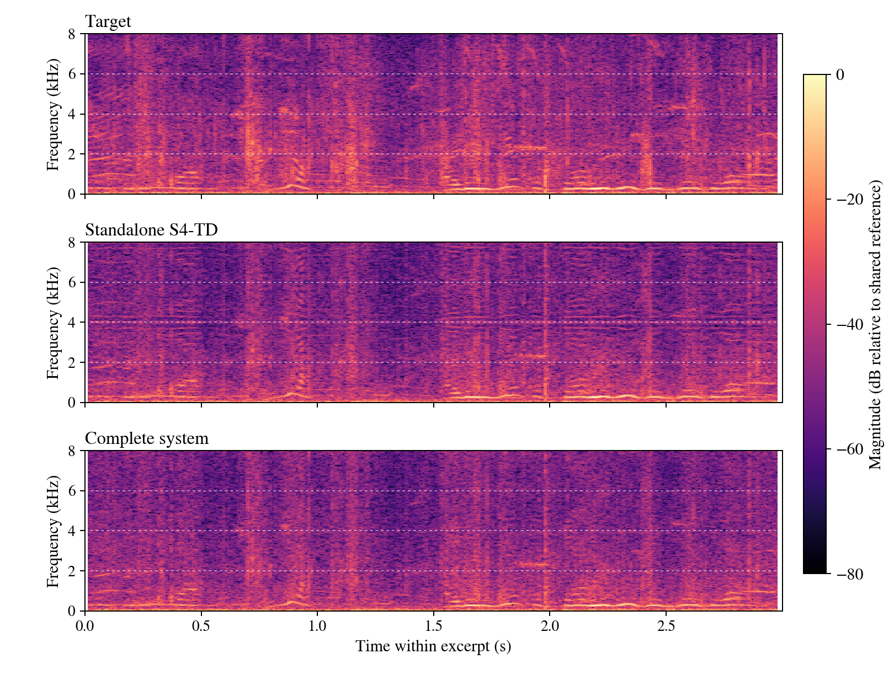
Target
Reference
Standalone S4-TD
B = F = 4
HA-MAI: −18.42 dB
NMSE: −6.17 dB
Complete system
B = F = 5; Hₖ ∈ {4, 5}
HA-MAI: −42.59 dB
NMSE: −6.27 dB
(b) Prediction errors: target − predicted signal
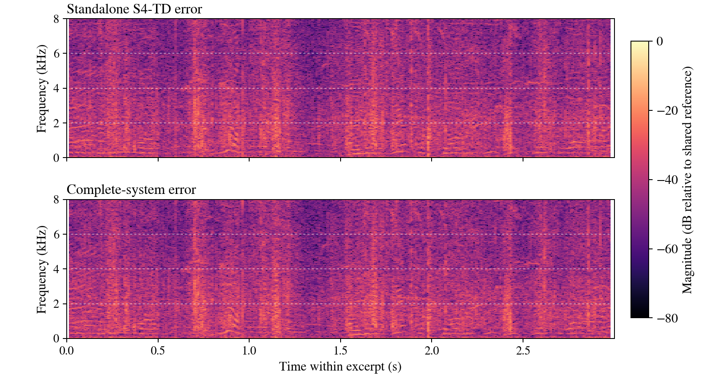
Standalone S4-TD error
Target − standalone predicted signal
Complete-system error
Target − complete-system predicted signal
Noise · ESC-50
(a) Target and predicted signals
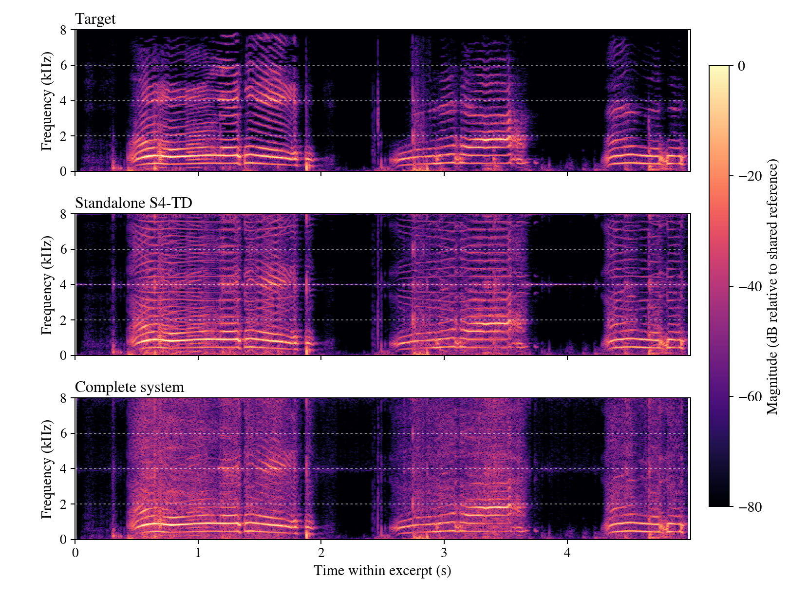
Target
Reference
Standalone S4-TD
B = F = 4
HA-MAI: −15.33 dB
NMSE: −11.23 dB
Complete system
B = F = 5; Hₖ ∈ {4, 5}
HA-MAI: −39.19 dB
NMSE: −12.03 dB
(b) Prediction errors: target − predicted signal
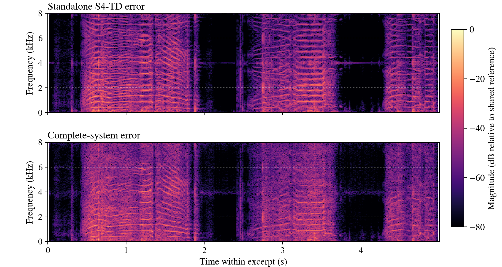
Standalone S4-TD error
Target − standalone predicted signal
Complete-system error
Target − complete-system predicted signal
All audio is mono, 16 kHz PCM16. Each target/predicted-signal group uses one shared gain (peak ≤ 0.95); error tracks are their exact differences, without further normalization or clipping. Spectrograms use a 512-sample Hann window, 128-sample frame shift, and 1024-point FFT over 0–8 kHz. Within each example, target, predicted signals, and errors share one magnitude reference and an 80 dB color range. Dashed lines mark the 2, 4, and 6 kHz mirror-symmetry axes. Click a figure to view it at full resolution. NMSE is 10 log₁₀ of error energy divided by target energy. Download clip metrics and metadata.